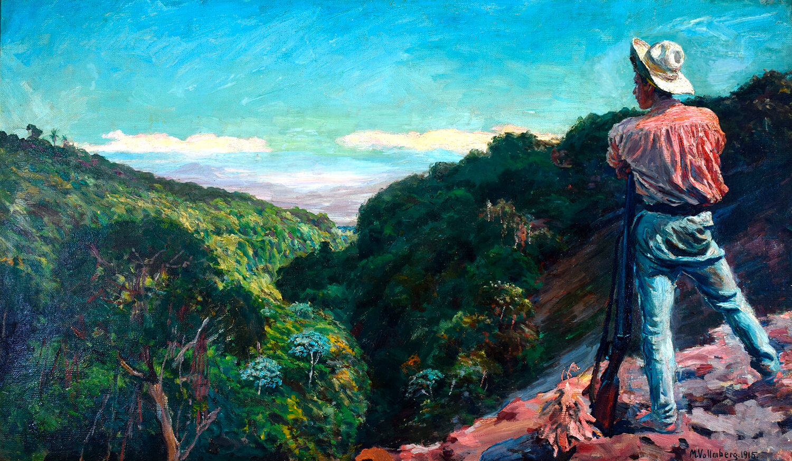
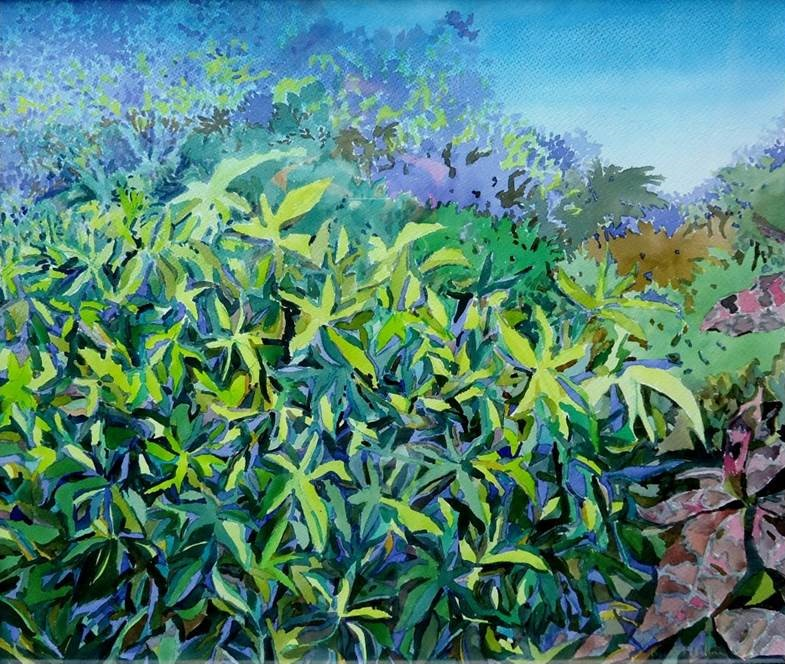

Impresionismo
El impresionismo fue un movimiento artístico surgido en Francia en la década de 1870, caracterizado por su interés en capturar la luz y la atmósfera de los objetos mediante el uso de pinceladas sueltas y colores contrastantes. Los impresionistas rompieron con las tradiciones académicas al pintar escenas de la vida cotidiana y paisajes al aire libre, desarrollando técnicas como el plein air.
Pinturas
Campesiono
- Artista:José Mejía Vides
- Año:1960
- Técnica:Óleo sobre lienzo
- Dimensiones: 70 cm x 50 cm
- Descripción:En esta obra, Mejía Vides captura una vista de una calle en San Salvador con una paleta de colores vibrantes y pinceladas sueltas que evocan la atmósfera y la luz del momento. La técnica impresionista se manifiesta en la forma en que la luz interactúa con los edificios y las sombras.
Cortadoras de café

- Artista:Fernando Llort
- Año:1982
- Técnica:Acrílico sobre lienzo
- Dimensiones: 80 cm x 60 cm
- Descripción:Llort utiliza técnicas impresionistas para capturar la calidad cambiante de la luz al atardecer sobre el Lago de Ilopango. Las pinceladas rápidas y el uso de colores cálidos y frescos reflejan la belleza efímera del paisaje.
India de Panchimalco

- Rodolfo Molina
- Año:1975
- Técnica:Óleo sobre lienzo
- Dimensiones: 90 cm x 70 cm
- Descripción:Molina representa un jardín lleno de flores con una técnica que recuerda a los impresionistas franceses, utilizando pinceladas rápidas y colores vibrantes para capturar la luz y el movimiento del viento entre las flores
Paisaje de la Montaña

- Artista:Manuel de la Cruz
- Año:1990
- Técnica:Óleo sobre lienzo
- Dimensiones: 100 x 80 cm
- Descripción:En esta pintura, de la Cruz emplea una técnica impresionista para representar las montañas y los árboles. La aplicación de color es libre y suelta, enfatizando los cambios en la luz y la atmósfera en lugar de los detalles precisos.
Valle de jiboa

- Artista: Miguel Ángel Ortiz Villacorta
- Año:1925
- Técnica:Óleo sobre lienzo
- Dimensiones: 89 x 100 cm
- Descripción:La pintura "Valle de Jiboa", captura vívidamente la atmósfera tranquila y majestuosa de esta región. Mediante una paleta de colores vibrantes, el artista resalta la belleza natural del Valle de Jiboa, representando sus campos verdes y colinas ondulantes bajo un cielo amplio y luminoso. La obra es un testimonio artístico que refleja el entorno rural y la vida cotidiana en El Salvador durante la década de 1920, ofreciendo una visión nostálgica y evocadora de la naturaleza y la cultura de la época.
Lavanderas
- Artista:José Mejía Vides
- Técnica:Óleo sobre lienzo
- Descripción: La obra presenta a mujeres indígenas lavando ropa, utilizando pequeños puntos de color para crear una imagen vibrante y detallada. Este estilo, conocido como puntillismo, permite una representación precisa de la luz y la textura, destacando el entorno natural y la vida cotidiana en El Salvador.